Heap
(ainda sob construção…)
Nem toda fila segue a política de acesso First In First Out (FIFO). Na verdade, em vários cenários do dia a dia, as filas que entramos possuem uma política diferente: são filas de prioridade. Por exemplo, mesmo que um adolescente chegue antes de um idoso na fila do banco, é provável que o idoso seja atendido primeiro porque ele tem, por lei (e deveria ter por civilidade também), prioridade no atendimento.
No contexto de estrutura de dados, precisamos pensar em como manter a estrutura ordenada tendo como critério essa prioridade. Então, vamos primeiro analisar alternativas para implementar filas de prioridade usando estruturas de dados lineares, como LinkedList ou ArrayList. Em primeiro lugar, os objetos passam a ter uma prioridade, que é representada por um atributo inteiro. No nosso exemplo, quanto maior esse número, maior a prioridade. Nesse caso, para implementarmos uma fila de prioridade, temos que tomar uma decisão: manter a fila ordenada ou não?
Se decidirmos manter a fila sempre ordenada tendo como critério a prioridade, precisamos utilizar o algoritmo de inserção ordenada, cujo custo é $O(n)$. Contudo, a extração do maior elemento é ${O(1)}$, pois ele sempre está no início da fila.
Se optarmos por não mater a fila ordenada por prioridade, temos o cenário oposto. A adição passa a ser $O(1)$, mas a remoção do maior passa a ser $O(n)$, pois teremos que pesquisar em toda a fila a maior prioridade.
Em resumo, temos de um lado adição $O(n)$ e remoção $O(1)$ e do outro lado temos adição $O(1)$ e remoção $O(n)$.
A estrutura que veremos neste material, Heap, resolve essa questão permitindo que a adição e extração do máximo sejam ambas realizadas em $O(\log n)$, o que é muito desejável do ponto de vista de eficiência. Além disso, o máximo fica sempre na raiz dessa estrutura, o que permite sua inspeção em $O(1)$.
Definições e Propriedades
Heaps são árvores binárias. É importante deixar claro desde já que são árvores binárias, mas não são árvores binárias de pesquisa. Mais especificamente, duas propriedades definem o Heap:
1. O valor de um nó é maior ou igual ao valor de seus filhos; 2. O Heap é uma árvore binária completa ou quase-completa da esquerda para a direita.
Propriedade 1. A primeira propriedade é a que difere um Heap de uma árvore binária de pesquisa (BST). Na BST, os valores à esquerda de um nó são menores do que ele e os valores à direita são maiores. No Heap, ambos são menores ou iguais. Heaps que seguem essa propriedade são Heaps Máximos porque o maior valor sempre está na raiz. Há também Heaps Mínimos, onde o nó tem valor sempre menor ou igual ao seus filhos. Neste caso, o menor valor sempre está na raiz. Neste material, vamos utilizar o termo Heap como sinônimo de Heap Máximo.
Propriedade 2. Se você leu o material de árvores binárias de pesquisa, você já sabe o que quer dizer uma árvore completa, certo? Mas,
o que quer dizer quase-completa da esquerda para a direita?
Quer dizer que, se ela não for completa, todos os níveis estão preenchidos, exceto o último, que deve estar preenchido da esquerda para a direita até um certo ponto. Vamos ver exemplos de Heaps e Não-Heaps para esclarecer esse conceito.
Para exemplos de Heaps, vamos analisar a figura abaixo. Perceba que, além de satisfazerem a propriedade 1, todas as estruturas são completas ou quase-completas da esquerda para a direita e, portanto, são Heaps.
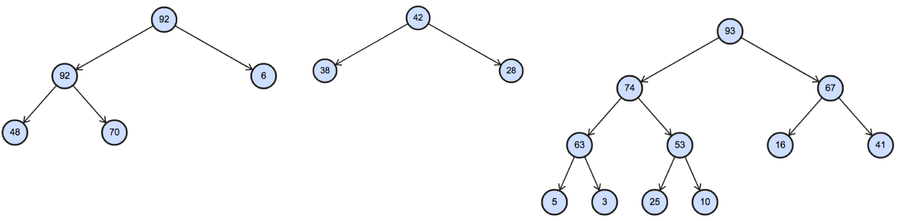
A primeira estrutura possui 3 níveis:
- Nível 0: 92
- Nível 1: 92 e 6
- Nível 2: 48 e 70
O nível 0 e o nível 1 estão completamente preenchidos. O único nível que não está preenchido é o último, mas ele está parcialmente preenchido da esquerda para a direita (46 e 70). Note que não há “salto” ao percorrer a estrutura em largura. Por isso, essa estrutura é um Heap.
A segunda estrutura é um Heap porque respeita a primeira propriedade e é uma árvore binária completa.
A terceira estrutura é um Heap porque respeita a primeira propriedade e é quase-completa da esquerda para a direita. Novamente, todos os níveis exceto o último estão completamente preenchidos e o último nível está parcialmente preenchido da esquerda para a direita:
- Nível 0: 93
- Nível 1: 74 e 67
- Nível 2: 63, 53, 16 e 41
- Nível 3: 5, 3, 25 e 10 (parcialmente preenchido da esquerda para a direita)
Note que, se removessemos o 25 dessa estrutura, ela não seria mais um Heap, pois o último nível não estaria preenchido da esquerda para a direita. Haveria um salto entre 3 e 10.
Agora, para fixar bem, vamos ver exemplos de estruturas que não são completas ou quase-completas da esquerda para a direita e, portanto, não são Heaps.

Em primeiro lugar, nenhuma das estruturas acima é completa. Agora precisamos checar se são quase-completas da esquerda para a direita.
A primeira estrutura não é quase-completa da esquerda para a direita. Veja:
- Nível 0: 92. Ok. Está todo preenchido.
- Nível 1: 92. Não está todo preenchido. Por isso não é quase-completa da esquerda para a direita.
- Nível 2: 48 e 70. Está preenchido da esquerda para a direita, mas o nível anterior não. Por isso não está ok.
A segunda estrutura também não é. Veja:
- Nível 0: 42. Ok. Está todo preenchido.
- Nível 1: 28. Não está preenchido da esquerda para a direita.
Por último, a terceira estrutura também não é quase-coompleta da esquerda para a direita.
- Nível 0: 93. Ok. Está todo preenchido.
- Nível 1: 74 e 67. Ok. Está todo preenchido.
- Nível 2: Não está todo preenchido da esquerda para a direita. Falta um nó à direita de 74. Por isso não é quase-completa da esquerda para a direita.
- Nível 3: Está preenchido da esquerda para a direita, mas o nível anterior não. Por isso não está ok.
E por que ser completa ou quase-completa é importante?
Você há de lembrar que boa parte das operações básicas fundamentais em árvores binárias são $\Theta(h)$, onde $h$ é a altura da árvore. Por isso, é preciso manter a altura próxima da altura mínima possível. Em uma árvore binária a altura mínima é $\Theta(\log n)$, certo?
Por isso a segunda propriedade de Heap é tão importante. Porque uma árvore completa ou quase-completa possui a altura $\Theta(\log n)$.
Por construção, a altura de um Heap é $\Theta(\log n)$, pois é uma estrutura completa ou quase completa da esquerda para a direita. Essa propriedade permite que as operações de inserção e remoção sejam eficientes.
Além disso, você pode estar se perguntando: e por que tem que ser quase-completa da esquerda para a direita? Porque isso facilita a implementação dessa estrutura de dados usando um array.
Implementação
Array? Nós havíamos implementado árvores binárias utilizando nós, não? Sim, mas quem foi que disse que só tem uma maneira de fazer as coisas? Devido ao fato do Heap ser uma árvore completa ou quase-completa, somos capazes de utilizar um array para representá-lo.
Como um array pode representar um Heap?
Nós vamos utilizar um array para implementar o Heap. Então, antes precisamos entender como os elementos dispostos em um array podem representar um Heap. Veja o exemplo abaixo:
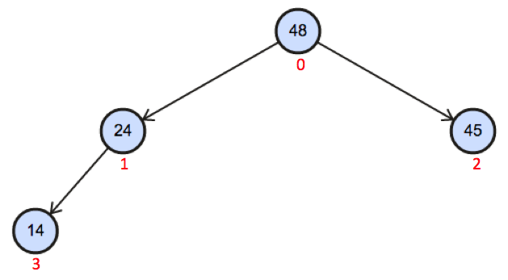
O array que representa esse Heap é $heap = [48, 24, 45, 14]$. Como? Basta percorrer o Heap em largura e preencher o array. Ou seja, o índice 0 do array sempre será preenchido com a raiz, neste caso o valor 48. Depois, no índice 1, o array é preenchido com o valor 24. O índice 2 recebe o valor 45 e, por último, o índice 3 recebe o valor 14.
Mais um exemplo.
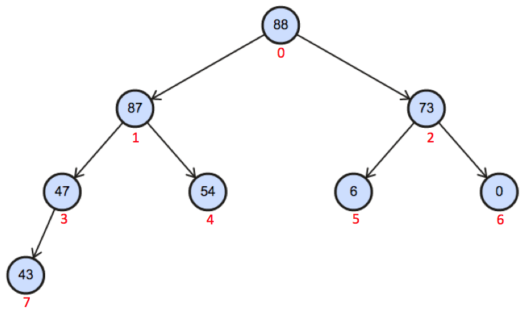
O array que representa esse Heap é $heap = [88, 87, 73, 47, 54, 6, 0, 43]$. Como? Basta percorrer o Heap em largura e preencher o array. Ou seja, o índice 0 do array será preenchido com o valor 88. Depois, no índice 1, o array é preenchido com o valor 87. O índice 2 recebe o valor 73. Os índices 3 e 4 são preenchidos com os valores 47 e 54, respectivamente. Por último, os índices 5, 6 e 7 são preenchidos com os valores 6, 0 e 43, respectivamente.
Organização Interna: atributos e construtor
Em primeiro lugar, já dissemos que a representação do Heap será através de um array. Como temos que definir o tamanho do array de antemão e não sabemos quantos elementos o Heap irá conter, precisamos também ter um atributo (tail) que controla o índice do último elemento do array. Vejamos:
public class Heap {
private int[] heap;
private int tail;
public Heap(int capacidade) {
this.heap = new int[capacidade];
this.tail = -1;
}
public boolean isEmpty() {
return this.tail == -1;
}
...
}Veja que o que define a ocupação do array é o valor do atributo tail. O método isEmpty, por exemplo, compara esse valor com -1 para determinar se o Heap possui elementos ou não.
left, right e parent
Para caminhar em uma árvore precisamos, a partir de um nó, acessar o nó à esquerda, o nó à direita e o nó pai. Na implementação de árvores binárias de pesquisa nós utilizamos as referências left, right e parent. Contudo, como estamos utilizando um array para armazenar os elementos, precisamos implementar métodos que retornem a esquerda, a direita e o pai de um nó, baseado no seu índice.
left. A esquerda de um nó no índice index sempre segue a fórmula $2*index + 1$. Basta analisarmos o nosso exemplo para chegar a essa conclusão.
$heap = [88, 87, 73, 47, 54, 6, 0, 43]$ e tail = 7
A raiz está no índice 0 do array. Portanto, o nó à sua esquerda está no índice 1, pois $2*0 + 1 = 1$.
O nó 87 está no índice 1 do array. Portanto, o nó à sua esquerda está no índice 3, pois $2*1 + 1 = 3$.
O nó 73 está no índice 2 do array. Portanto, o nó à sua esquerda está no índice 5, pois $2*2 + 1 = 3$.
O nó 47 está no índice 3 do array. Portanto, o nó à sua esquerda está no índice 7, pois $2*3 + 1 = 7$.
Os nós 54 (índice 4), 6 (índice 5), 0 (índice 6) e 43 (índice 7) não possuem esquerda, pois se aplicarmos a fórmula $2*index+1$ os valores gerados são índices maiores do que tail e, portanto, não fazem parte do Heap.
right. A direita de um nó no índice index sempre segue a fórmula $2*(index + 1)$. Basta analisarmos o nosso exemplo para chegar a essa conclusão.
$heap = [88, 87, 73, 47, 54, 6, 0, 43]$ e tail = 7
A raiz está no índice 0 do array. Portanto, o nó à sua direita está no índice 2, pois $2*(0 + 1) = 2$.
O nó 87 está no índice 1 do array. Portanto, o nó à sua direita está no índice 4, pois $2*(1 + 1) = 4$.
O nó 73 está no índice 2 do array. Portanto, o nó à sua esquerda está no índice 6, pois $2*(2 + 1) = 3$.
O restante dos nós, índices 3, 4, 5, 6 e 7, não possuem direita, pois se aplicarmos a fórmula $2*(index+1)$ os valores gerados são índices maiores do que tail e, portanto, não fazem parte do Heap.
parent. O pai de um nó no índice index sempre segue a fórmula $int((index-1)/2))$. Basta analisarmos o nosso exemplo para chegar a essa conclusão.
$heap = [88, 87, 73, 47, 54, 6, 0, 43]$ e tail = 7
A raiz está no índice 0 do array. Portanto, não possui nó pai, pois $int((0-1)/2)) = -1$, que é um índice inexistente.
Os nós 87 e 73 estão nos índices 1 e 2, respectivamente.Portanto, o nó pai está no índice 0, pois $int((1-1)/2)) = 0$ e $int((2-1)/2)) = 0$.
Os nós 47 e 54 estão nos índices 3 e 4, respectivamente. Portanto, o nó pai está no índice 1, pois $int((3-1)/2)) = 0$ e $int((4-1)/2)) = 1$.
Os nós 6 e 0 estão nos índices 5 e 6, respectivamente. Portanto, o nó pai está no índice 2, pois $int((5-1)/2)) = 2$ e $int((5-1)/2)) = 2$.
Por fim, o nó 43 no índice 7 do array. O nó pai está no índice 2, pois $int((7-1)/2)) = 3$.
Abaixo estão os métodos left, right e parent da classe Heap.
public class Heap {
...
public int left(int index) {
return 2 * index + 1;
}
public int right(int index) {
return 2 * (index + 1);
}
public int parent(int index) {
return (index-1)/2;
}
...
}Inserção
Primeiro vamos entender o conceito visualmente, depois passamos para o código, ok? Suponha que inicialmente nós criamos um array de 10 posições e o Heap armazenado nesse array é o da figura abaixo.
$heap = [88, 87, 73, 47, 54, 6, 0, 43, 0, 0]$ e tail = 7
Note que os elementos que compõe o Heap estão entre os índices 0 e tail. Os índices 8 e 9 estão preenchidos com 0 porque é o valor default de Java. Nós tratamos essas posições como livres para serem adicionados novos elementos. Para reforçar: quem define os limites dos elementos presentes no Heap são 0 e tail.
Agora, atenção:
A adição de um novo elemento sempre é feita na próxima
posição livre do array, isto é, tail + 1. Essa estratégia
garante que o Heap sempre será completo ou quase completo
da esquerda para a direita.
Então vamos adicionar o valor 100 ao Heap. Como dissemos, a adição é feita em tail + 1. Neste momento, o Heap e o array assumem os seguintes estados.

$heap = [88, 87, 73, 47, 54, 6, 0, 43, 100, 0]$ e tail = 8
Temos um problema aqui, certo? O fato de adicionarmos sempre na próxima posição livre garante que nunca vamos quebrar a propriedade de ser completa ou quase-completa da esquerda para a direita. No entanto, 100 é um valor maior que o valor do nó pai (47). Isso fere a restrição da Propriedade 1, que estabelece que todo nó deve ser maior que seus filhos. A ideia geral para resolver esse problema é comparar 100 com seu pai e, caso ele seja maior, trocar os dois de posição. Isso deve ser feito enquanto 100 for menor do que o pai ou 100 chegar na raiz.
Vamos ver como isso é feito passo a passo. Na primeira comparação, como 100 é maior que 47, há a troca desses valores, como ilustrado na figura abaixo. Perceba também que o array é modificado.
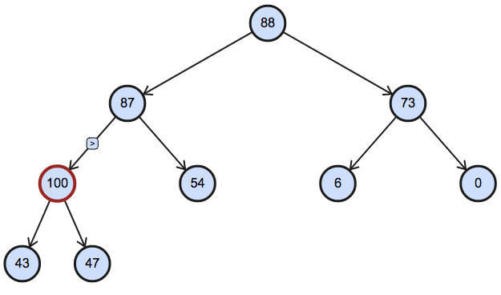
$heap = [88, 87, 73, 100, 54, 6, 0, 43, 47, 0]$ e tail = 8
O problema ainda persiste, pois 100, quando comparado com o nó pai (87) é maior. Novamente, trocamos esses valores, como ilustrado na figura abaixo.
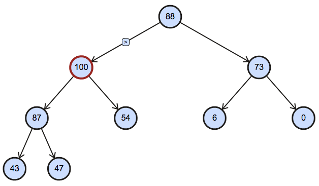
$heap = [88, 100, 73, 87, 54, 6, 0, 43, 47, 0]$ e tail = 8
O problema ainda persiste, pois 100, quando comparado com o nó pai (88) é maior. Novamente, trocamos esses valores, como ilustrado na figura abaixo.
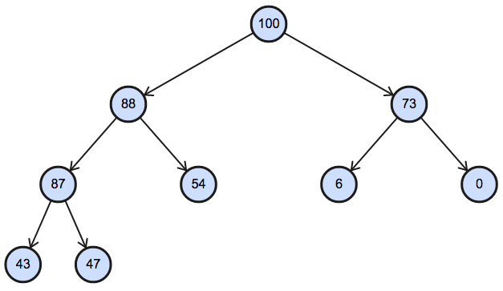
$heap = [100, 88, 73, 87, 54, 6, 0, 43, 47, 0]$ e tail = 8
Feito! Como 100 passou a ser a raiz, a inserção é finalizada.
Mais um exemplo? Vamos adicionar o elemento 90. Lembrando, a inserção sempre é feita em tail + 1. Então temos o Heap e seu array com o seguinte estado.
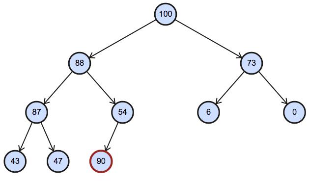
$heap = [100, 88, 73, 87, 54, 6, 0, 43, 47, 90]$ e tail = 9
Comparando 90 com o nó pai, temos que 90 > 54 e, portanto, precisamos trocar esse valor. Feito isso, temos o seguinte cenário.

$heap = [100, 88, 73, 87, 90, 6, 0, 43, 47, 54]$ e tail = 9
O problema ainda persiste, pois 90, quando comparado com o nó pai (88) é maior. Novamente, trocamos esses valores, como ilustrado na figura abaixo.

$heap = [100, 90, 73, 87, 88, 6, 0, 43, 47, 54]$ e tail = 9
Feito! Como 90 é menor do que o nó pai (100), a inserção é finalizada.
Agora que já entendemos como o algoritmo funciona, vamos ao código.
...
public void add(int n) {
if (tail >= (heap.length - 1))
resize();
else {
tail += 1;
this.heap[tail] = n;
int i = tail;
while (i > 0 && this.heap[parent(i)] < this.heap[i]) {
int aux = this.heap[i];
this.heap[i] = this.heap[parent(i)];
this.heap[parent(i)] = aux;
i = parent(i);
}
}
}
...O primeiro if (tail >= heap.length - 1) verifica se ainda há espaço no array para adicionar um novo elemento. Se não houver, o método resize é invocado. Ele apenas cria um array maior e copia os elementos para esse novo array.
Caso haja espaço (else), incrementamos tail (tail += 1) e adicionamos o novo elemento no array (this.heap[tail] = n).
Agora vamos à rotina de comparar com o valor do nó pai enquanto for maior ou não atingir a raiz. Isso é feito no bloco do while. Caso essas duas codições forem satisfeitas, troca-se os valores do nó e do pai e atualiza o índice do elemento a ser verificado na próxima iteração (i = parent(i)).
Eficiência do método de inserção
No pior caso, o elemento adicionado é o maior elemento do Heap e, por isso, temos que subir até a raiz. Nesse pior caso, o caminho percorrido é igual ao tamanho da altura, que sempre é $O(\log n)$ porque o Heap é completo ou quase-completo da esquerda para a direita.
A inserção de um elemento no Heap é $O(\log n)$
Remoção e Heapify
A remoção em um Heap não é parametrizada. O elemento removido sempre é o maior, ou seja, sempre a raiz.
A remoção em um heap é sempre feita na raiz.
Para manter a propriedade de ser completo ou quase-completo da esquerda para a direita, trocamos o valor da raiz com a última folha e removemos essa última folha. Note que, por ser um array, não removemos de fato a posição, apenas atualizamos tail (tail = tail - 1).
Vamos visualizar esse processo para o Heap abaixo.
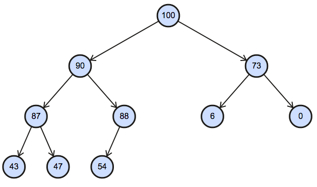
$heap = [100, 90, 73, 87, 88, 6, 0, 43, 47, 54]$ e tail = 9
O primeiro passo então, é trocar a raíz (this.heap[0]) pela última folha (this.heap[tail]). No nosso exemplo, isso significa que 54 passa a ser a raiz.

$heap = [54, 90, 73, 87, 88, 6, 0, 43, 47, 100]$ e tail = 9
Agora decrementamos o valor de tail tail (tail -= 1). O Heap fica nesse estado:
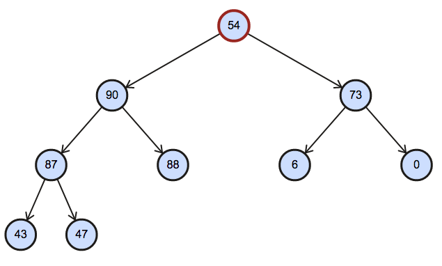
$heap = [54, 90, 73, 87, 88, 6, 0, 43, 47, 100]$ e tail = 8
Temos um problema, certo? 54 é menor que o valor à sua esquerda e que o valor à sua direita. O que vamos fazer a partir de agora é resolver esse problema. E isso tem nome: heapify.
A ideia geral é comparar 54 com o filho à esquerda e o filho à direita. O maior dos três assume a posição de 54. Se o maior dos 3 for 54, o algoritmo não precisa seguir adiante. Vamos lá.
Comparando 54, 90 e 73, o maior valor é 90. Portanto, trocamos 90 com 54.
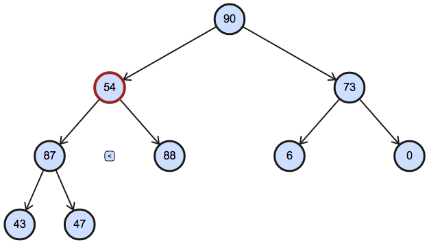
$heap = [90, 54, 73, 87, 88, 6, 0, 43, 47, 100]$ e tail = 8
Novamente, comparamos 54 com o filho à esquerda e o filho à direita. O maior dos três assume a posição de 54. Ou seja, trocamos 54 por 88.
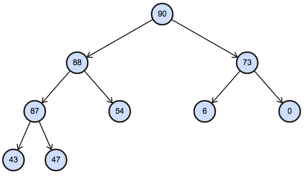
$heap = [90, 88, 73, 87, 54, 6, 0, 43, 47, 100]$ e tail = 8
Feito! 54 não possui mais filhos e, portanto, o algoritmo para.
Agora que já entendemos como o algoritmo funciona, vamos às particularidades do código aos poucos. Primeiro, a ideia geral do método remove(), que outros autores também chamam de extractMax().
...
public int remove() {
if (isEmpty()) throw new RuntimeException("Empty");
int element = this.heap[0];
this.heap[0] = this.heap[tail];
this.tail -= 1;
this.heapify(0);
return element;
}
...Esse código implementa o que discutimos. Primeiro, armazena a raiz em uma variável temporária para poder retornar (element = this.heap[0]). Depois, coloca na raiz o valor presente na última folha (this.heap[0] = this.heap[tail]) e diminui o tamanho do heap (this.tail -= 1) para poder iniciar o heapify a partir dela (heapify(0)).
E o heapify?
...
private void heapify(int index) {
if (isLeaf(index) || !isValidIndex(index))
return;
// compares index, left and right to find max
int index_max = max_index(index, left(index), right(index));
// if current index is not greater than its children,
// swap and keep heapifying.
if (index_max != index) {
swap(index, index_max);
heapify(index_max);
}
}
...O primeiro passo é verificar as condições de parada. Isso significa checar se o índice passado como parâmetro é uma folha ou está fora dos limites do Heap. Nesses dois casos não há a necessidade de efetuar o heapify.
Se houver a necessidade, comparamos index com left e right para determinar qual é o máximo entre eles. Isso é feito pelo método max_index.
Se o máximo entre eles for o próprio index, o algoritmo para. Caso contrário, trocamos index pelo máximo (swap(index, index_max)) e continuamos a efetuar o heapify a partir do índice que armazenava o máximo (heapify(index_max)).
Abaixo estão as implementações dos métodos auxiliares max_index, isValidIndex, isLeaf e swap. Como dito anteriormente, o método max_index compara os valores em index, left e right para identificar o maior deles. Você vai notar que há algumas verificações relacionadas à validade dos índices, uma vez que o índice deve estar dentro do intervalo $[0, tail]$.
...
private int max_index(int index, int left, int right) {
if (this.heap[index] > this.heap[left]) {
if (isValidIndex(right)) {
if (this.heap[index] < this.heap[right])
return right;
}
return index;
} else {
if (isValidIndex(right)) {
if (this.heap[left] < this.heap[right])
return right;
}
return left;
}
}
private boolean isValidIndex(int index) {
return index >= 0 && index <= tail;
}
private boolean isLeaf(int index) {
returnn index > parent(tail) && index <= tail;
}
private void swap(int i, int j) {
int aux = this.heap[i];
this.heap[i] = this.heap[j];
this.heap[j] = aux;
}
...Eficiência do método de inserção
No pior caso o heapify é executado até o nível das folhas. Nesse pior caso, o caminho percorrido é igual ao tamanho da altura, que sempre é $O(\log n)$ porque o Heap é completo ou quase-completo da esquerda para a direita.
A remoção de um elemento no Heap é $O(\log n)$
Build Heap
Nem todo array representa um Heap, certo? Por exemplo, o array $a = [40, 87, 2, 90, 1, 100, 30, 20]$ não representa um Heap porque nem todo nó é maior do que os nós à esquerda e à direita, como ilustrado na figura abaixo.
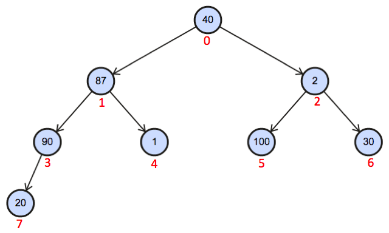
O nosso desafio agora é transformar essa estrutura em um Heap. A ideia é aplicar sucessivas vezes o algoritmo heapify, discutido na seção anterior.
Nós começamos pelo pai da última folha. Por que? Porque a aplicação do heapify nas folhas é inútil, já que uma folha já respeita as propriedade de Heap.
Então, para o exemplo acima, vamos aplicar primeiro heapify no índice 3, que armazena o valor 90. Depois, vamos aplicar em todos os índices menores que 3 até a raiz, ou seja, heapify(2), heapify(1) e heapify(0). Ao final desse processo o array representará um Heap.
Vamos acompanhar passo a passo esse algoritmo. A primeira execução do heapify é no índice 3, que armazena 90. Como 90 é maior que o seu único filho, nada é feito. Depois aplicamos o heapify no índice 2, que armazena o valor 2. O heapify então compara 2, 100 e 30. Como 100 é maior, há a troca de valores entre 100 e 2. O resultado parcial até agora é o seguinte.
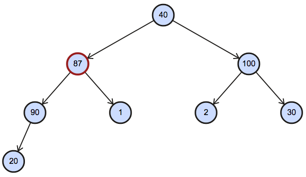
Agora falta aplicar no índice 1 e 0. Aplicando heapify no índice 1, o algoritmo compara 87 com 90 e 1. Como 90 é maior, há a troca de valores entre 90 e 87. Depois disso, 87 é comparado com 2. Como é maior, o algoritmo para. Até aqui, temos o seguinte cenário.
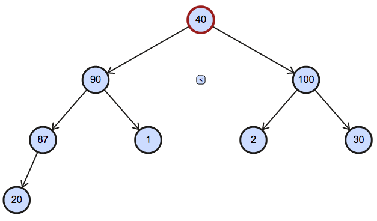
Por fim, falta apenas a última aplicação de heapify. Isso é feito no índice 0, ou seja, na raiz.O resultado final é ilustrado abaixo.

Em resumo, para construir um Heap a partir de um array qualquer basta aplicar heapify partindo do índice do pai da última folha até a raiz. O código abaixo implementa essa rotina.
...
public Heap(int[] heap) {
this.heap = heap;
this.buildHeap();
}
private void buildHeap() {
for (int i = parent(this.tail); i >= 0; i--)
heapify(i);
}
...Notas
O que facilita muito o aprendizado deste tipo de estrutura é utilizar uma ferramenta de visualização. Para fazer as figuras deste material eu utilizei esta ferramenta. Também acho o VisualAlgo uma excelente ferramenta para visualizar as estruturas que estudamos.